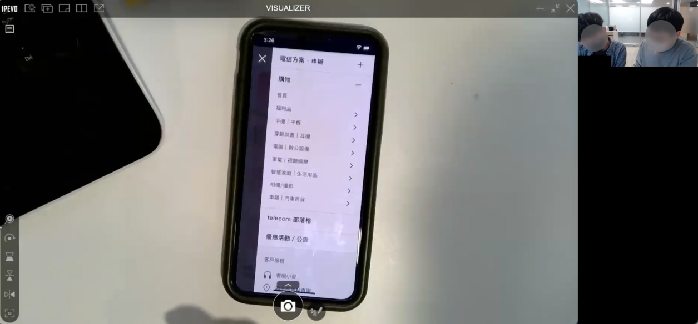
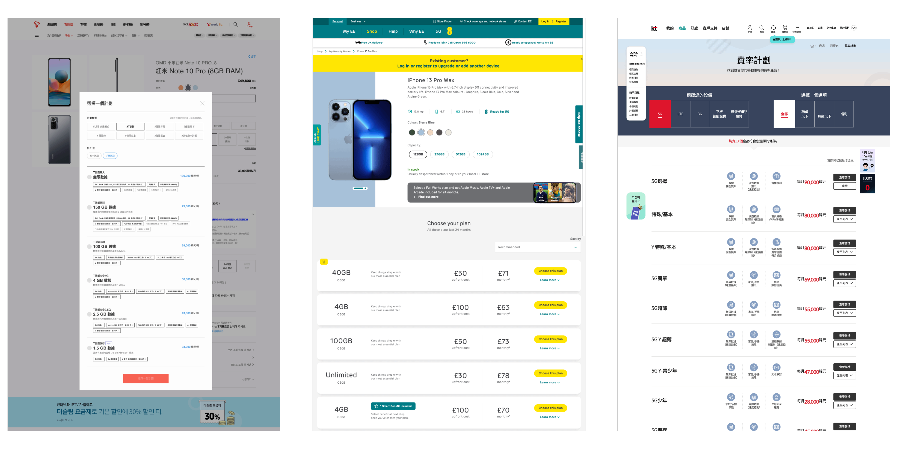
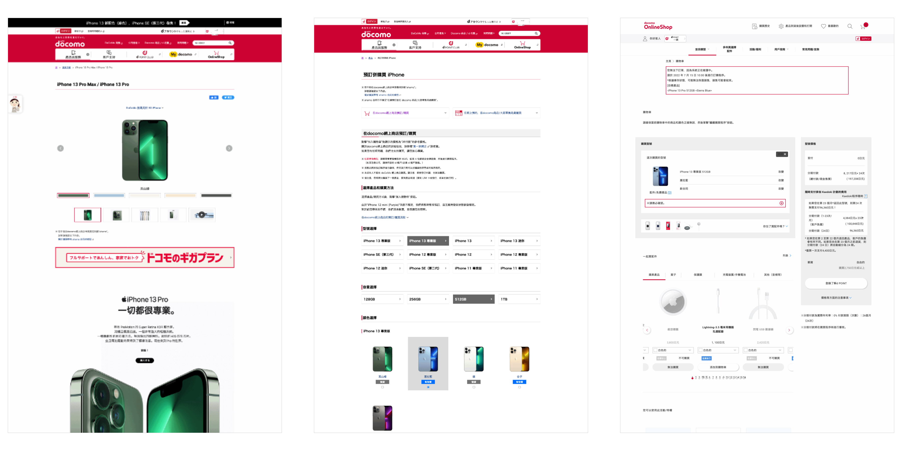
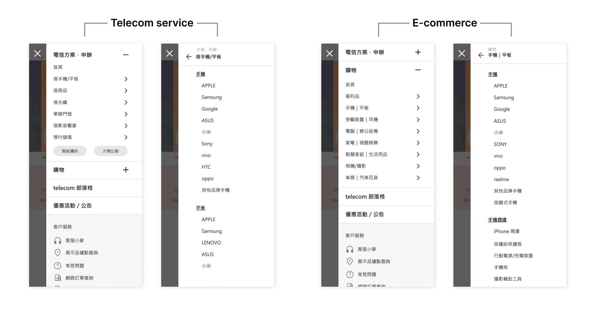
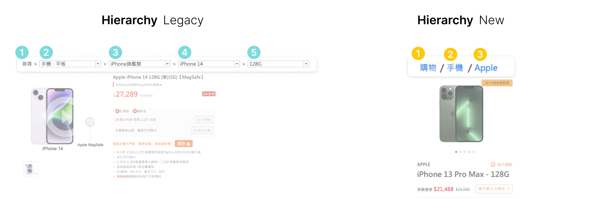
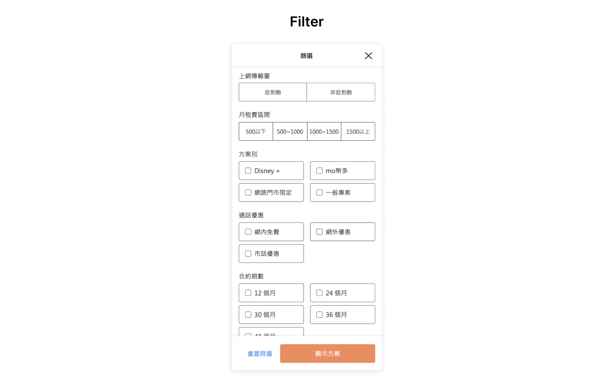
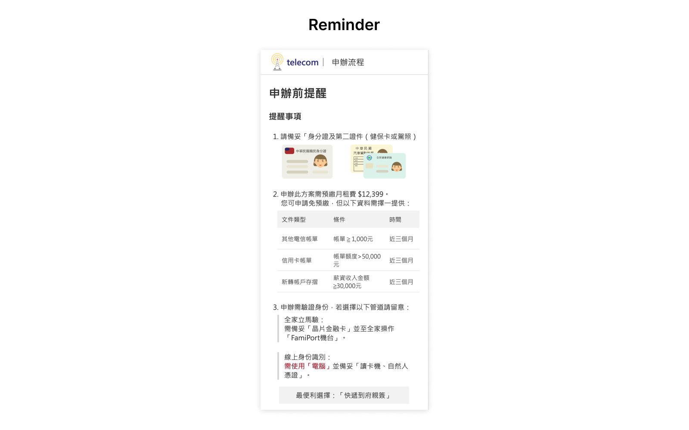
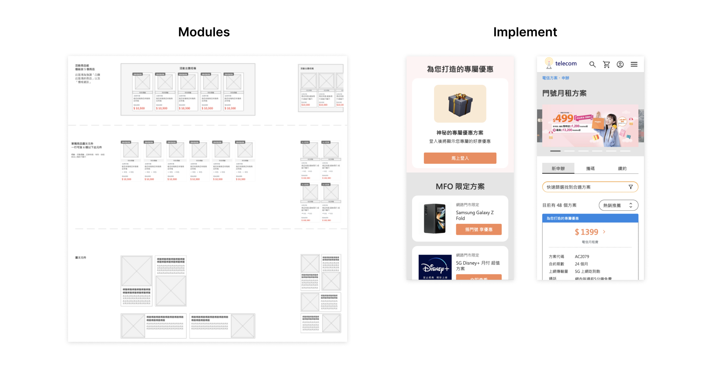

©2018 Daniel Tseng
Jul 2022 - Oct 2022
Brief:
Our client aims to merge telecommunication application services with e-commerce into a single platform.
Our responsibility involves conducting user research and designing prototypes to assist the client in achieving this integration.
My role:
In this project, I collaborated closely with the product managers and other designers.
I was responsible for information architecture, wireframing and prototyping, from defining the problems to deliver the final prototype.
Project Challenges:
This project involves numerous constraints that require effective communication with our client.
Additionally, there are many complex functionals and processes, demanding careful attention during the communication to ensure we can deliver comprehensive design.
In this project, our objective is to integrate a telecom online store with a 3C online shopping platform, with the primary focus being on promoting telecom bundling contracts alongside online shopping.
Identify service gaps and offer business insights along with design recommendations.
Our team conducted one-on-one in-depth interviews to uncover insights into the behaviors and thoughts of telecom service applicants and 3C shoppers.
Additionally, exploring users' current experiences with our client’s services. This integrated analysis will inform subsequent design and business execution recommendations.
In addition to data analysis, our research has uncovered various data behaviors between our customer’s different platforms. Despite being under the same company, there is minimal cross-traffic between them. Moreover, it appears that the telecom service application process involves excessive redirections before the actual application, which increases the risk of user drop-off.
During the research phase, my main role was to provide testing materials to understand users' perspectives on different interfaces. This information serves as a reference for our subsequent design process.
 
1. The application process is lengthy, and contains a lot of content, often causing users to stop the application process.
When users want to apply for telecom services, they have to go through multiple steps, fill in a lot of information, and even upload documents.
If something is missing, they can't complete the application at that moment.
In addition to the lengthy application process, there is animation when switching to every step in the current interface, which can make the user experience more tiring.
2. There are many plans, making it difficult for users to choose and distinguish between them.
When users are selecting different telecom plans, they are presented with numerous plan cards, often lacking consistent information presentation, which leads to user confusion.
Additionally, the interface design makes it challenging for users to compare and switch between plans.
3. There are too many marketing terms used as the primary categories, making it difficult to understand.
Using numerous marketing terms as category names has made it challenging for users who are not familiar with our client's services to understand the classifications.
Consistent
As it's a merger of two platforms, we need to maintain design consistency while ensuring that users can clearly identify the service they are currently using.
Mobile-first
Given that over 70% of users operate the current platform using mobile devices, this project is designed with a mobile-first approach in mind.
Clear and Simple
Using numerous marketing terms as category names has made it challenging for users who are not familiar with our client's services to understand the classifications.
Creating a user environment tailored to specific purposes
The users of the new platform can be quickly segmented into two distinct groups: telecom contract users and 3C shoppers.
Both of these groups have clear intentions.
Users coming to apply for telecom services have a specific goal in mind, and those seeking 3C products intuitively want to shop.
Therefore, in terms of information architecture, we have created two distinct paths for these two types of users.
This ensures that users looking for services can focus solely on the service they need.
However, from a branding perspective and the positioning of the platform, there is a profound connection between telecom services and 3C products. Effectively interlinking users between these two categories provides customers with more flexible choices. Thus, at a deeper structural level, we have integrated these two services, allowing telecom service customers and 3C product customers to flow seamlessly between each other.

Accelerating goal achievement through simplification.
Given the priority for mobile version, ensuring users swiftly reach their target pages is paramount.
Consequently, while reorganizing our product categories, we aimed to minimize user navigation time and expedite their arrival at relevant pages.
We achieved this by reducing the levels of the original product categorization, allowing users to quickly access the product list page and commence browsing.
For telecom services, we devised a filter that allows users to set their desired criteria before browsing plans. This ensures that displayed telecom plans align more closely with users' expectations. Simultaneously, this approach also reduces the number of displayed plans, enabling users to swiftly locate plans they prefer.
 
Thoughtful reminders, making application easy and smooth
In the process of applying for telecom services, there's a substantial amount of information to fill out, coupled with the need to upload identification documents.
This complexity often leads users to abandon the application process.
To address this, we've reorganized the original flow and the required information.
Similar content is grouped together to reduce the time users need to understand and alleviate the fragmented feeling of information, enhancing coherence and the smoothness of completion.
Additionally, we've introduced thoughtful reminders prior to the application process, informing users about the necessary documents and important application notes. This increases the likelihood of completing the application on the first attempt.

Creating a consistent experience
In addition to modularizing marketing elements, we have also ventured into modular design for telecom plans.
This involves defining a consistent format so that users can comprehend various plan details using the same information presentation style.
This reduces the burden of deciphering complex information and enables users to swiftly navigate through different telecom plans.
Enhancing sales efforts while reducing maintenance costs.
In addition to catering to users, we have also gathered internal feedback.
As an e-commerce platform, marketing is indispensable.
Effective marketing not only boosts sales but also helps users quickly locate products and promotions.
Consequently, marketing sections have been retained across various sections of the site, providing more operational flexibility for internal administrators.
At the same time, we have implemented modular design on the platform. We are planning various components that will allow internal marketing personnel, project managers, graphic designers, and other team members to adjust and utilize pre-planned elements for future page operations. This enhances page consistency and reduces internal maintenance costs.
This project has indeed consumed a substantial amount of time in communication with the client. There were various challenges, including regulatory and technical constraints, different application and purchasing processes, and even internal stakeholder interests to navigate. We dedicated considerable effort to understanding and internalizing these complexities. Both our team and the client's team put in tremendous effort to merge and redesign the platforms in just a few short months.
After the project concluded, I also reflected on the communication costs incurred and whether there might have been more efficient approaches. In the early stages, perhaps we placed too much trust in the completeness of the information provided by the client and didn't engage in extensive communication, which subsequently led to the need for more time for confirmations in the later stages. Consequently, I believe that sometimes, it's advisable to maximize communication within the manageable scope of the cost. This approach may help avoid the need for spending additional time on adjustments and confirmations later on, especially when we are an external team.
©2018 Daniel Tseng